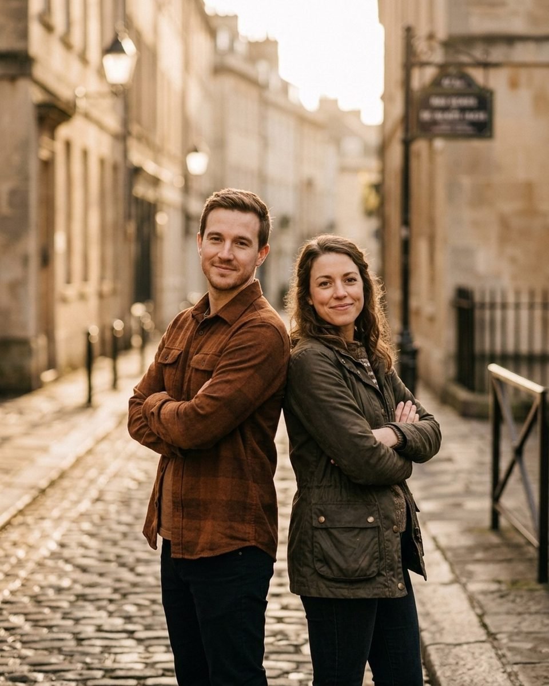
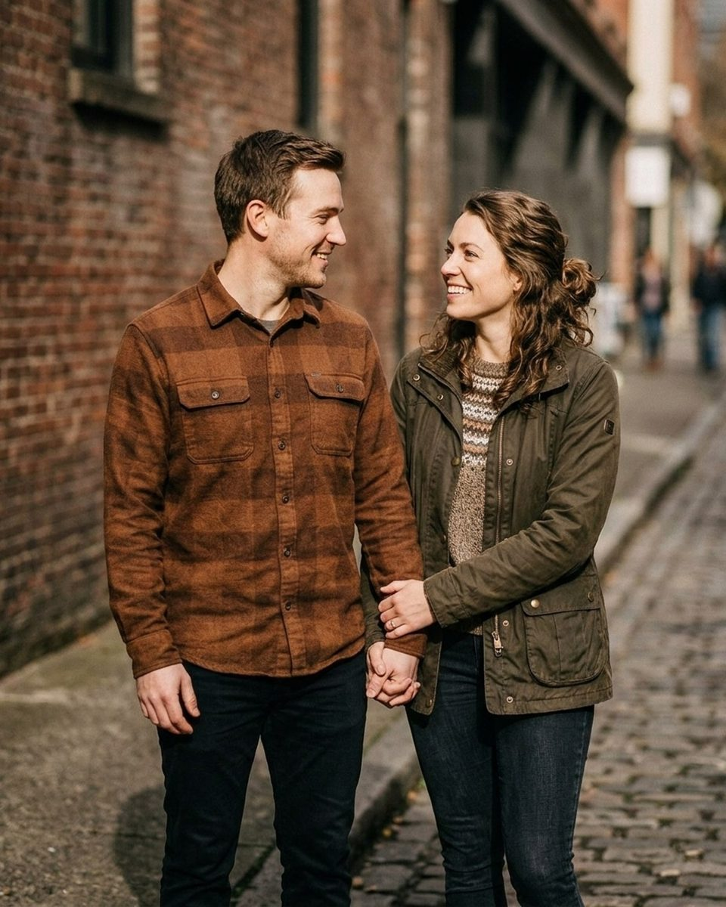
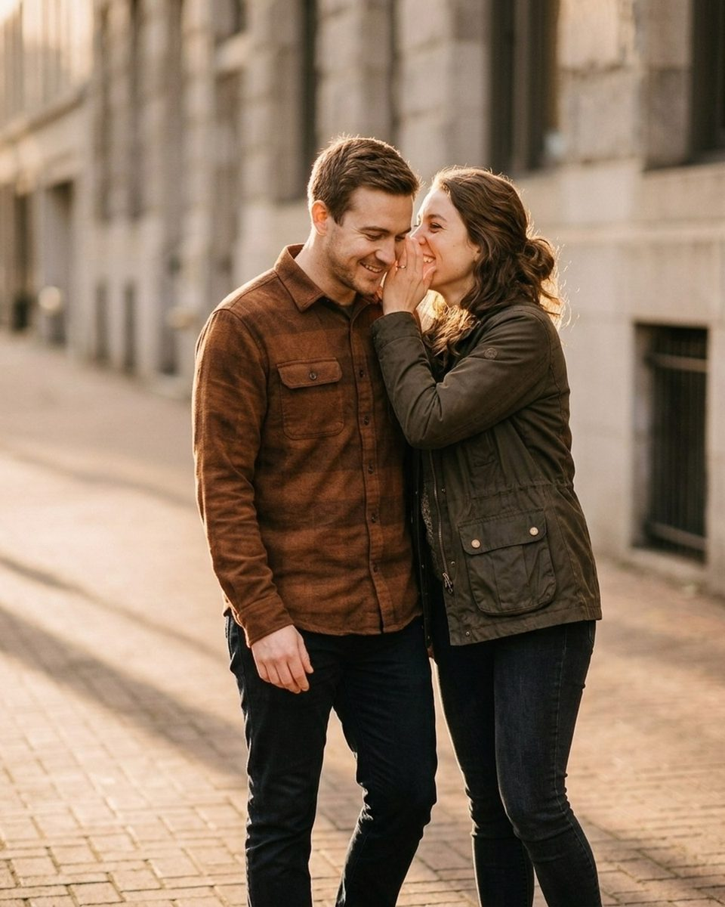
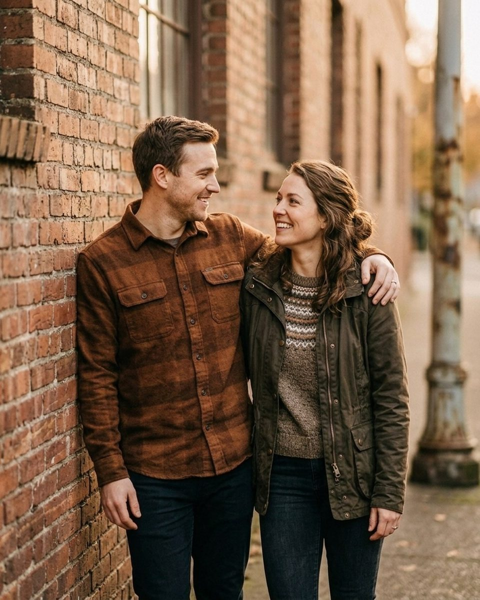

Posing a couple who aren’t touchy
Seventeen prompts from the Prompted catalog for the couple who told you up front that they are not into PDA, plus the poses that read as closeness without asking for any.
Some couples tell you before the session: we are not really PDA people. Others do not tell you, and you find out in the first five minutes, when the hug you asked for lands as a side-on pat and both of them laugh at it in a way that is not quite amusement. Either way the problem is the same, and it is not shyness. Plenty of couples who sit tangled together on their own sofa all evening will not do it in a park with a stranger holding a camera, and plenty of others are simply not physical with each other, never have been, and are not going to start today because a photographer asked them to. Pushing produces exactly the thing they were afraid of: two people performing closeness badly, which reads on the frame as distance even when they are touching.
What works is to stop treating contact as the subject. Closeness in a photograph comes from the direction of attention far more than from skin, which is to say from where they are looking, which way their shoulders are angled, and whether they are doing the same thing at the same moment. A good number of poses in the catalog produce all three with both sets of hands at their sides. The prompts below are the ones that ask for a task or a sentence instead of an embrace, sorted the way a session actually runs, and every one of them is copied word for word from the Prompted catalog with the pose it belongs to. The reference images here are AI-generated rather than real session frames; real galleries are being added through the contributor program as photographers submit their own work.
Ask before the session, and take the answer at face value
Put a line in the questionnaire: is there anything you would rather not do in front of a camera. Most couples answer it honestly, and a couple who have written down that kissing is off the table have handed you the single most useful piece of information about the shoot. The mistake is to read it as an opening position and spend the hour negotiating. If you test it twice they will spend the rest of the session braced for the third attempt, and bracing is visible in the shoulders from twenty feet away. Say out loud, early, that you are not going to ask for anything they have ruled out, and then do not ask. The permission you are after is not permission to touch. It is permission to stop thinking about you.
There's no wrong way to do this. Stand close and I'll do the rest.
Nervous clientFrom the pose “Umbrella share home”
Say this in the first minute, before the first frame, while you are still walking them to the spot. It makes two promises at once: that there is no standard they are failing to meet, and that the technical part is yours rather than theirs. Standing close is the whole ask, and it is an ask almost anyone will agree to.
Look at their ear. I know it sounds strange. Trust me.
Nervous clientFrom the pose “Arm swing stroll”
For the partner who keeps drifting their eyes to the lens to check how they are doing. An ear is a specific, slightly absurd target, which is why it works: it is far easier to obey than look lovingly at each other, and it puts their face at the angle you wanted anyway.
The poses that need no contact at all
Start here, not with hand-holding. A pose where nobody has to touch anybody gives you three or four usable frames and, more importantly, gives the couple evidence that this is going to be survivable. Back-to-back and side-by-side walking setups do the work through geometry: spines or shoulders in light contact at most, both faces lit, and the relationship implied by the fact that they are clearly doing one thing together. Shoot these properly rather than as a warm-up. For some couples these will be the best pictures of the session, and you want them on the card before anything harder gets tried.

Settle in like the last minute of a slow song.
CalmFrom the pose “Back to back”
Use it once they are in position and you can see both of them still holding the pose rather than inhabiting it. It gives the body something to do, which is settle, and it sets a tempo without asking for an expression. Shoot through the two or three seconds after you say it instead of on the word itself.
Tell them the exact moment you knew.
RomanticFrom the pose “Back to back urban”
A question disguised as a direction, and it works back-to-back precisely because they cannot see each other while they answer it. You get the listening face and the telling face in the same frame, and neither of them is a camera face. Keep quiet afterwards and let the answer run long.
Breathe in together — and let it out slow.
CalmFrom the pose “Arm swing stroll forest”
For the walking frames, said just before they start moving. A shared breath synchronises the stride, which is the thing that makes two people walking side by side look like a couple rather than two strangers heading the same way. It also drops the shoulders about an inch.
Stay quiet together. Quiet looks incredible on you two.
CalmFrom the pose “Look back over shoulder”
Say this to a pair who have gone silent and are worried that the silence is the problem. Naming quiet as the thing you want converts it from a failure into the assignment, and a couple who are not demonstrative are usually very good at it.
Hands first, and nothing else for a while
When you do introduce contact, make it hands, make it low, and make it the smallest version that will register. Joined hands at hip height between two bodies is a universally legible sign of a couple and asks for almost nothing: no faces close together, no arms around anybody, no decision about whose head goes where. It is also reversible in a way a hug is not, which matters to someone who is monitoring how much they have agreed to. Shoot it from behind first, with both of them walking away, so their faces are out of it entirely and the hands carry the frame.

We can take this as slow as you want. Start by just holding hands.
Nervous clientFrom the pose “Look back over shoulder home”
The line to use at the exact moment you move from no contact to some. It concedes the pace to them and names the first step, so the instruction is finite rather than open-ended. Most couples who said no to PDA have no objection at all to this, and saying so out loud is what lets them believe the rest of the hour is not a slope.
Say their name, just their name, quietly.
RomanticFrom the pose “Walking hand in hand field”
Quiet and small, which is the point. It asks for one word rather than a gesture, and the expression that arrives when someone hears their own name said softly by the person next to them is not an expression anyone can produce on request.
Tell them your worst joke. The one they've heard a hundred times.
PlayfulFrom the pose “Interlocked hands detail urban”
Good for a couple whose affection lives in their sense of humour instead of their hands. You are after the eye-roll and the laugh underneath it, which is the real register of their relationship, and it arrives reliably because the joke is genuinely bad and they both know it.
You two just talk. I'm not even listening, I promise.
Nervous clientFrom the pose “Stair sit mountain”
Say it as you step back from a seated setup, then actually step back farther than feels necessary and shoot long. Seated poses give people somewhere to put their hands, and a conversation gives them somewhere to put their eyes, which between them solve most of what makes a reserved couple look stranded.
Give them a job instead of a feeling
The prompts that fail with an undemonstrative couple are the ones that name an emotion and wait: look at each other like you love them, be romantic, get close. These ask a person to produce a feeling on cue in front of a stranger, which is hard for anyone and nearly impossible for someone who already finds the whole exercise exposing. A task works instead because it can be completed. There is a right answer, they can tell they have given it, and the by-product is a real expression that you did not have to request.

Forget I'm here for a second. Tell them about the first time you met.
Nervous clientFrom the pose “Wall lean”
The most reliable line in this whole guide. It replaces the thing they cannot do, feel something at the camera, with the thing they can do, which is tell a story they both know by heart. Expect the first twenty seconds to be unusable and the next minute to carry the set.
Try to make each other laugh without touching. Loser buys dinner.
PlayfulFrom the pose “Shoulder lean sunset urban”
Worth reading twice, because the constraint in it is the reason it belongs here: the game explicitly rules out touching. A competitive pair will go all in on winning, and you get open-mouthed laughter from two people who would have flinched at a prompt about affection.
Show me the face you make when they take too long to get ready.
PlayfulFrom the pose “Whispered secret”
A shared complaint is a kind of intimacy, and it is the kind that reserved couples are most comfortable showing in public. The face they make is specific, well rehearsed between them, and funny to exactly one other person, who is standing right there.
Do your handshake. Every couple has one — if not, invent it now.
PlayfulFrom the pose “Stair sit mountain”
Use it when you need movement and contact without asking for either in those words. A handshake is a routine they already own, so it comes out loose, and if they do not have one the invention is funnier than the performance would have been. Shoot the invention.
The quiet frames at the end
Thirty minutes in, a reserved couple has usually loosened by some margin, and the temptation is to spend that credit on the pose you wanted at the start. Resist it. What you have earned is not a kiss. It is stillness without self-consciousness, which is a harder thing to photograph and a better thing to own. Put them somewhere they can lean, say very little, and shoot slowly through it.

Rest there. There's no clock today.
CalmFrom the pose “Umbrella share home”
Say it and then stop talking. Most of a session's tension is pace, and a couple who have been quietly waiting for the next instruction will drop their shoulders the moment it is clear none is coming. Keep shooting through the pause.
Slow everything down by half. Even your blinking.
CalmFrom the pose “Shoulder lean sunset urban”
A pacing instruction rather than a posing one. Halving everything, blinking included, is a slightly odd request that people find easy to follow, and it produces the slow lids and soft jaw that read as ease rather than patience.
Stand still together and listen to the wind for a second.
CalmFrom the pose “Wall lean”
The last frame of the day. It aims their attention at something outside the two of them and outside you, which is the one configuration in which almost anybody forgets a camera is present. Give it a full ten seconds before the first shutter.
What to leave off the shot list
Build the list in advance and leave out the dip kiss, the lift and spin, the lap sit and the nose-to-nose. Not because they are bad poses, but because a couple who have told you they are not touchy will spend the session waiting for them, and an unasked question is worth more than a politely declined one. Replace each with the version that works at arm's length: a walk for the lift, a bench or a step for the lap sit, a whispered sentence for the nose-to-nose. If one of them starts initiating something closer on their own, shoot it and say nothing, which is different from suggesting it.
Then tell them what they are getting. A couple who are braced through a session often assume the gallery will be a record of their failure to be affectionate, and it will not be: it will be twenty frames of two people doing the same thing at the same time, which is what they actually look like. Saying so at the end is the part most photographers skip. The same logic, applied to the two people who freeze rather than decline, is in what to say when a couple goes stiff, and the hour-by-hour version is in engagement session scripts. If the reluctant one is a father at a family session, what to say to a dad who hates having his photo taken covers the same ground at a harder subject count.
The Fall Mini Session Shot List
About 25 poses grouped by family size, each with the words to say. A free PDF, sent once you confirm your address.
One email to confirm, one with the PDF. Unsubscribe any time. No selling, no sharing.
Every prompt in this guide is in the app, with the pose it belongs to.
Prompted is the posing app that is only a posing app: 259 poses, each with word-for-word prompts in four tones, filtered to the light you're standing in. The sun tracker is free forever.
Get Prompted on the App Store